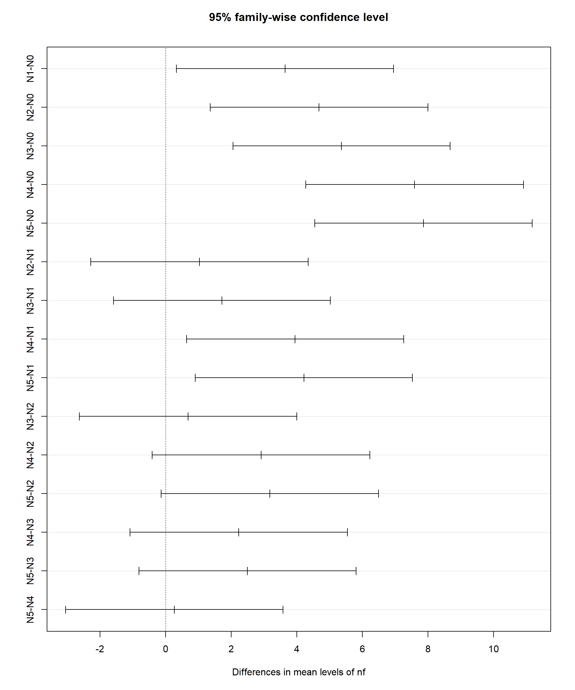
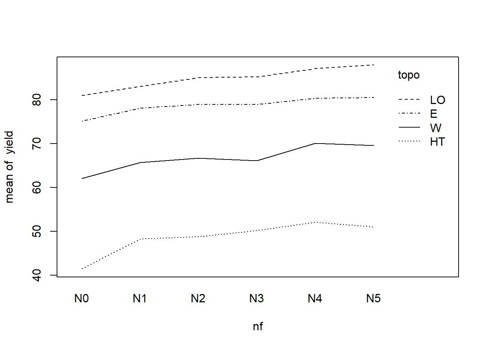
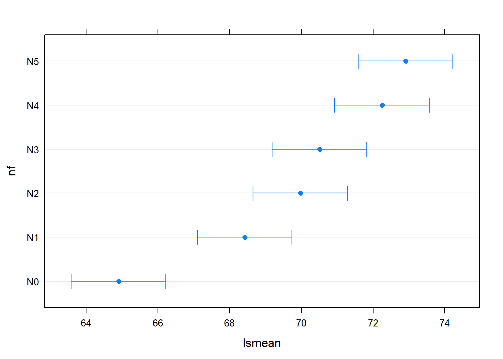

Lecture 3 - Linear Modelling
Dr. Fabio Veronesi
April 2018
Video Lecture
This video covers both Lecture 3 and Lecture 4
Introduction
In the previous lecture we started talking about inferential statistics and t-test, which we can use to compare two samples. However, in the majority of cases we work with more complex designs where we need to compare different treatments, so we need more advanced tests, which will be describe here.
We will start though by taking a step back and talking about the assumptions of inferential statistics.
Assumptions of parametric tests
Generally speaking, inferential statistics works by comparing mean values and confidence intervals. As we discussed in the previous lecture, this implies computing the standard error of the mean. However, if you remember from the first day, the standard error of the mean can only be used when we have a normal distribution. In cases where the distribution is not normal we need to use quantiles. This implies that with distributions that are different from the normal, we cannot use standard statistical tests.
This is probably the most important assumption of the test we will discuss today. However, it is not the only one For example, if we want to apply ANOVA we need to check the following assumptions:
- Independence
- Normality
- Equality of variances between groups
- Balanced design
Some of these assumptions are quite strict, while other can be relaxed, particularly if we have at least 10 samples per group.
ANOVA, or analysis of variance, is a test that compares mean values from several groups based on the following equation:
\(y_j = \eta + \tau_i + \epsilon\)
where \(y_j\) is the effect of treatment \(\tau_i\) on group \(j\), \(\eta\) is the grand mean, i.e. the global mean of all groups, and \(\epsilon\) is the error term.
Most of the assumptions are related to the error term \(\epsilon\), which is assumed to be independent, normally distributed and have constant variance. The assumption of independence is very strict, if our data are correlated this assumption will be violated and the results of ANOVA could be biased. However, if the experiment is properly designed and fully randomized this will not be an issue. Normality and constant variance are assumptions that can be relaxed if sample size is sufficiently large. We will look at how to check both of them below.
ANOVA
This lecture will show the R code necessary to perform an ANOVA, but it will not dig too much into the theory behind the analysis. If you want to know more about it please look at the following document I wrote: ANOVA
In this lecture we will load agricultural datasets from a package named agridat. Please install and load it:
install.packages("agridat")library(agridat)Other packages we need, and which needs to be installed, are:
library(car)
library(pwr)
library(moments)
library(Rfit)
library(MASS)
library(tidyverse)
library(lsmeans)
library(sjstats)From agridat we can now load the dataset lasrosas.corn, which has more that 3400 observations of corn yield (measured in quintals/ha) in a field in Argentina, plus several explanatory variables both factorial (or categorical) and continuous.
data(lasrosas.corn)
str(lasrosas.corn)## 'data.frame': 3443 obs. of 9 variables:
## $ year : int 1999 1999 1999 1999 1999 1999 1999 1999 1999 1999 ...
## $ lat : num -33.1 -33.1 -33.1 -33.1 -33.1 ...
## $ long : num -63.8 -63.8 -63.8 -63.8 -63.8 ...
## $ yield: num 72.1 73.8 77.2 76.3 75.5 ...
## $ nitro: num 132 132 132 132 132 ...
## $ topo : Factor w/ 4 levels "E","HT","LO",..: 4 4 4 4 4 4 4 4 4 4 ...
## $ bv : num 163 170 168 177 171 ...
## $ rep : Factor w/ 3 levels "R1","R2","R3": 1 1 1 1 1 1 1 1 1 1 ...
## $ nf : Factor w/ 6 levels "N0","N1","N2",..: 6 6 6 6 6 6 6 6 6 6 ...We will start by performing a one-way ANOVA, where the treatment structure has only one level. For this experiment we will try to explain yield (which is our dependent variable, \(y\)), with nitrogen levels (independent variable, or predictor). In R analysis of variance can be performed with the function aov:
One.Way = aov(yield ~ nf, data=lasrosas.corn) To obtain the ANOVA table we can use the function summary:
summary(One.Way)## Df Sum Sq Mean Sq F value Pr(>F)
## nf 5 23987 4797 12.4 6.08e-12 ***
## Residuals 3437 1330110 387
## ---
## Signif. codes: 0 '***' 0.001 '**' 0.01 '*' 0.05 '.' 0.1 ' ' 1As for the t-test, in the summary above we are mostly interested in the p-value, which tells us the level of significance of our treatment. In this case the p-value is very low, which means some of the groups (i.e. plots treated with particular levels of nitrogen) are statistically different from other.
We can be a bit more precise by performing multiple comparison, where we test each combination of treatments (i.e. each individual contrast):
TukeyHSD(One.Way, conf.level=0.95) ## Tukey multiple comparisons of means
## 95% family-wise confidence level
##
## Fit: aov(formula = yield ~ nf, data = lasrosas.corn)
##
## $nf
## diff lwr upr p adj
## N1-N0 3.6434635 0.3353282 6.951599 0.0210713
## N2-N0 4.6774357 1.3606516 7.994220 0.0008383
## N3-N0 5.3629638 2.0519632 8.673964 0.0000588
## N4-N0 7.5901274 4.2747959 10.905459 0.0000000
## N5-N0 7.8588595 4.5478589 11.169860 0.0000000
## N2-N1 1.0339723 -2.2770686 4.345013 0.9489077
## N3-N1 1.7195004 -1.5857469 5.024748 0.6750283
## N4-N1 3.9466640 0.6370782 7.256250 0.0089057
## N5-N1 4.2153960 0.9101487 7.520643 0.0038074
## N3-N2 0.6855281 -2.6283756 3.999432 0.9917341
## N4-N2 2.9126917 -0.4055391 6.230923 0.1234409
## N5-N2 3.1814238 -0.1324799 6.495327 0.0683500
## N4-N3 2.2271636 -1.0852863 5.539614 0.3916824
## N5-N3 2.4958957 -0.8122196 5.804011 0.2613027
## N5-N4 0.2687320 -3.0437179 3.581182 0.9999099These results provide a p-value for each pair of treatments. This allows us to determine which of these are different from each other. For example, N0 is statistically different from all other nitrogen levels. However, N1 is different from N4 and N5, but not from N2 and N3.
These results can also be presented in a graphical form:
TukeyHSD(One.Way, conf.level=0.95) %>%
plot()
Confidence intervals that intersect zero are not significant, while the higher the average difference in mean values the large the effect size.
We can extract the mean values of each treatment using the following line:
model.tables(One.Way, type="means")## Tables of means
## Grand mean
##
## 69.82831
##
## nf
## N0 N1 N2 N3 N4 N5
## 64.97 68.62 69.65 70.34 72.56 72.83
## rep 573.00 577.00 571.00 575.00 572.00 575.00This function provides us with the grand mean, mean values of each treatment level and the number of replicates for each level. As you can see not all the levels were replicated the same number of times; this is therefore an unbalanced design. In this case this is not much of a problem because the number of samples is very high. However, for smaller experiments this can create issues and in some cases we cannot avoid unbalanced designs.
If this happens we cannot rely on the standard ANOVA table, but we have to compute what is called a type III test, as follows:
Anova(One.Way, type="III")## Anova Table (Type III tests)
##
## Response: yield
## Sum Sq Df F value Pr(>F)
## (Intercept) 2418907 1 6250.447 < 2.2e-16 ***
## nf 23987 5 12.396 6.075e-12 ***
## Residuals 1330110 3437
## ---
## Signif. codes: 0 '***' 0.001 '**' 0.01 '*' 0.05 '.' 0.1 ' ' 1To know more about this please look at: Types of Sums of Squares
We can investigate the effects of each treatment using the following line:
model.tables(One.Way, type="effects")## Tables of effects
##
## nf
## N0 N1 N2 N3 N4 N5
## -4.855 -1.212 -0.178 0.5075 2.735 3.003
## rep 573.000 577.000 571.000 575.0000 572.000 575.000These values are all referred to the grand mean, meaning for example that N0 has a value that is -4.855 below the grand mean. We can verify that looking at the table of means above.
Statistical vs. Biological Effect
Sometimes there is some confusion on the meaning of p-values. Generally speaking, p-values are reported based on the probability they represent. As we mentioned in the previous lecture, significance is generally accepted at 5%, meaning that our results are considered significant only if the p-value is equal or below 0.05. However, p-values can also be smaller and in these cases we talk about highly significant differences if p-value is equal or below 0.01; very highly significant differences if the p-value is equal or below 0.001.
These values express the probabilities of incurring in a Type I error (false positive), and indirectly also the probabilities of incurring in a type II error (it is very difficult to have low power in cases where the p-value is very highly significant). However, a very low p-value does not necessarily mean that the groups we are testing have large differences. In other words, the magnitude of differences between treatments is not measured by the p-value, which only tells that the probabilities of obtaining the same results by chance are very low.
We can better understand this point once again with a little simulation similar to what we did in the previous lecture:
S1 = rnorm(n=3, mean=5, sd=2)
S2 = rnorm(n=3, mean=6, sd=2)
S3 = rnorm(n=3, mean=7, sd=2)Here we are creating three samples that have differences equal to half a standard deviation. In terms of effect size their differences are equal to ES = 0.5. Therefore we are talking about relatively large differences between groups. However, the question is: can we detect these differences with a statistical tests?
Before we can do that we need to create a data.frame to hold these data in a format that we can then use for ANOVA. We can do that with the following code:
SIM.LargeEffect = expand.grid(Rep=1:3, Treatment=c("T1", "T2", "T3"))
SIM.LargeEffect## Rep Treatment
## 1 1 T1
## 2 2 T1
## 3 3 T1
## 4 1 T2
## 5 2 T2
## 6 3 T2
## 7 1 T3
## 8 2 T3
## 9 3 T3The function expand.grid is extremely useful for simulations (and for many other things). It basically allows us to supply several variables (in the form of vector of equal or unequal length), and it then creates a data.frame with all the combinations of elements in each vector. In this example, we simulated an experiment with three treatments (T1,T2, and T3) and three replicates. The function creates a data.frame of \(3 \times 3 = 9\) rows with each combination. At this point we can simulate dependent variables (let’s call it yield) using the three samples we created above:
SIM.LargeEffect$Yield = 1:9First of all, we create an additional column in the data.frame, called yield, which we fill with numbers from 1 to 9. These will act as place holders until we replace them with values from our three samples. To do so we can do some subsetting of the object SIM.LargeEffect:
SIM.LargeEffect[SIM.LargeEffect$Treatment=="T1",]$Yield = S1
SIM.LargeEffect[SIM.LargeEffect$Treatment=="T2",]$Yield = S2
SIM.LargeEffect[SIM.LargeEffect$Treatment=="T3",]$Yield = S3Here we are first subsetting the object by treatment, and at the same time replacing the elements in the column yield (for only the treatment we have subset) with one of the samples we created above.
Let’s see how the object SIM.LargeEffect looks now:
SIM.LargeEffect## Rep Treatment Yield
## 1 1 T1 5.528217
## 2 2 T1 3.013302
## 3 3 T1 6.445517
## 4 1 T2 4.440771
## 5 2 T2 3.973044
## 6 3 T2 8.297347
## 7 1 T3 10.650348
## 8 2 T3 7.888614
## 9 3 T3 4.894435Now that we have a dataset where we know the effect size to be exactly 0.5, we can test it using ANOVA:
ANOVA.LargeEffect = aov(Yield ~ Treatment, data=SIM.LargeEffect)
summary(ANOVA.LargeEffect)## Df Sum Sq Mean Sq F value Pr(>F)
## Treatment 2 13.28 6.639 1.166 0.373
## Residuals 6 34.15 5.692Clearly, since this is a simulation it may be that we obtain a significant p-value some times. However, chances are the large majority of times the p-value will not be significant, despite the relatively large differences between samples. This is because the samples size is small (\(n=3\)).
On the contrary, if the sample size is large enough we can obtain very small p-values even in cases where differences between groups are extremely small. Let’s look at the following simulation:
S4 = rnorm(n=7000, mean=5, sd=2)
S5 = rnorm(n=7000, mean=5.1, sd=2)
S6 = rnorm(n=7000, mean=5.2, sd=2)
SIM.SmallEffect = expand.grid(Rep=1:21000, Treatment=c("T1", "T2", "T3"))
SIM.SmallEffect$Yield = 1:21000
SIM.SmallEffect[SIM.SmallEffect$Treatment=="T1",]$Yield = S4
SIM.SmallEffect[SIM.SmallEffect$Treatment=="T2",]$Yield = S5
SIM.SmallEffect[SIM.SmallEffect$Treatment=="T3",]$Yield = S6
ANOVA.SmallEffect = aov(Yield ~ Treatment, data=SIM.SmallEffect)
summary(ANOVA.SmallEffect)## Df Sum Sq Mean Sq F value Pr(>F)
## Treatment 2 334 166.88 41.53 <2e-16 ***
## Residuals 62997 253136 4.02
## ---
## Signif. codes: 0 '***' 0.001 '**' 0.01 '*' 0.05 '.' 0.1 ' ' 1Here we have three samples of size \(n = 7000\) each, and with this amount of data finding very high significance for extremely small differences between groups is possible. This is clearly an unrealistic example; however, it clearly shows that p-value and differences between groups are not correlated. The conclusion is that it is always advisable to not just report the p-value but also the effect size (or at least a plot that clearly shows differences between groups).
Sample size for One-Way ANOVA
As we mentioned in the previous lecture, power analysis can help us determine the minimum sample size required to achieve good power, given a particular effect size. Therefore, we can try to see what would be the optimal sample size for our simulations, starting from the first (\(ES = 0.5\)). The function pwr.anova.test has a slightly different syntax compared to pwr.t.test. First of all we have to include the option k for the number of groups (in this case we have three treatments, so three groups). Then we have an option f for the effect size. This is another way of computing the effect size, which is simply \(f = \frac{ES}{2}\); the other options are the same:
pwr.anova.test(k=3, f=0.25, sig.level=0.05, power=0.8) ##
## Balanced one-way analysis of variance power calculation
##
## k = 3
## n = 52.3966
## f = 0.25
## sig.level = 0.05
## power = 0.8
##
## NOTE: n is number in each groupAs you can see, the required sample size (\(n\)) is much larger than our three replicates.
Now we can check the sample size for the second simulation. First of all we need to compute the effect size, which we can do with the procedure we followed in the previous lecture:
numerator = (mean(S5)-mean(S4))
denominator = sqrt((((length(S5)-1)*sd(S5)^2)+((length(S4)-1)*sd(S4)^2))/(length(S5)+length(S4)-2))
ES = numerator/denominator
ES## [1] 0.04544516Now that we have the effect size we can input it in pwr.anova.test to compute the number of samples (remember that \(f = \frac{ES}{2}\)):
pwr.anova.test(k=3, f=ES/2, sig.level=0.05, power=0.8) ##
## Balanced one-way analysis of variance power calculation
##
## k = 3
## n = 6221.152
## f = 0.02272258
## sig.level = 0.05
## power = 0.8
##
## NOTE: n is number in each groupPost Hoc Power Analysis
So far we talked about power analysis only in cases where we need to compute the optimal sample size for our experiments. This is the most common way to use power analysis, and it referred to as a priori power analysis since it is performed before the experiment. However, this is not the only way to use power analysis. We can also perform it post-hoc, meaning after we have run the experiment. This is very valuable to better understand and interpret our experiment. For example, it may be that we run an analysis and our result suggest significant differences. Can we really be sure that our results are reliable?
In the book Statistics Done Wrong, by Alex Reinhart there is a very good explanation of the effect of considering a significance of 5% and a power of 80%. In his example Reinhard argues that even though we are assuming we are risking false positives only in 5% of cases, these may actually be much higher (around 30%). So computing the power of our experiment can allow us to achieve more robust conclusions.
Doing an post-hoc power analysis in R is very easy. We can simply use the same function we used above:
pwr.anova.test(k=3, n=3, f=0.25, sig.level=0.05)##
## Balanced one-way analysis of variance power calculation
##
## k = 3
## n = 3
## f = 0.25
## sig.level = 0.05
## power = 0.07756408
##
## NOTE: n is number in each groupAs you can see, in the line above we are using the function pwr.anova.test in a different way. We included the option n, with the number of samples per group we used in our first simulation, and excluded the option power, since this is what we need to compute.
As expected, results suggest our power is very low.
k-way ANOVA
If we need to perform ANOVA analysis for more complex factorial designs we can just add elements to the formula:
Two.Way = aov(yield ~ nf + topo, data=lasrosas.corn)
summary(Two.Way)## Df Sum Sq Mean Sq F value Pr(>F)
## nf 5 23987 4797 23.21 <2e-16 ***
## topo 3 620389 206796 1000.59 <2e-16 ***
## Residuals 3434 709721 207
## ---
## Signif. codes: 0 '***' 0.001 '**' 0.01 '*' 0.05 '.' 0.1 ' ' 1model.tables(Two.Way, type="means")## Tables of means
## Grand mean
##
## 69.82831
##
## nf
## N0 N1 N2 N3 N4 N5
## 64.97 68.62 69.65 70.34 72.56 72.83
## rep 573.00 577.00 571.00 575.00 572.00 575.00
##
## topo
## E HT LO W
## 78.7 48.67 84.91 66.74
## rep 730.0 785.00 885.00 1043.00For multiple comparisons we need to specify which contrasts to look for:
TukeyHSD(Two.Way, conf.level=0.95, which=c("topo")) ## Tukey multiple comparisons of means
## 95% family-wise confidence level
##
## Fit: aov(formula = yield ~ nf + topo, data = lasrosas.corn)
##
## $topo
## diff lwr upr p adj
## HT-E -30.034335 -31.934257 -28.134414 0
## LO-E 6.206619 4.359143 8.054095 0
## W-E -11.961925 -13.745028 -10.178822 0
## LO-HT 36.240955 34.429291 38.052618 0
## W-HT 18.072411 16.326440 19.818381 0
## W-LO -18.168544 -19.857294 -16.479794 0If we do not specify the option which, the function will return all contrasts.
Interaction
Sometimes we are interested in understanding if our treatments are interacting with each other. An interaction happens when the effects of one treatment depends on the level of another treatment. In other words, one treatment has an effect (positive or negative) on the other treatment. Before even considering including an interaction into a model we can use the function interaction.plot:
with(lasrosas.corn, {
interaction.plot(x.factor=nf, trace.factor=topo, response=yield)
})
In this line we are using the function with, which is used to tell R to run the function interaction.plot including the dataset lasrosas.corn. The plot is fairly easy to interpret, we should see lines crossing to detect a significant interaction, which is not the case here.
To add an interaction term we simply need to change again the formula in the model:
Two.Way.Interaction = aov(yield ~ nf * topo, data=lasrosas.corn)
summary(Two.Way.Interaction)## Df Sum Sq Mean Sq F value Pr(>F)
## nf 5 23987 4797 23.176 <2e-16 ***
## topo 3 620389 206796 999.025 <2e-16 ***
## nf:topo 15 1993 133 0.642 0.842
## Residuals 3419 707727 207
## ---
## Signif. codes: 0 '***' 0.001 '**' 0.01 '*' 0.05 '.' 0.1 ' ' 1model.tables(Two.Way.Interaction, type="means")## Tables of means
## Grand mean
##
## 69.82831
##
## nf
## N0 N1 N2 N3 N4 N5
## 64.97 68.62 69.65 70.34 72.56 72.83
## rep 573.00 577.00 571.00 575.00 572.00 575.00
##
## topo
## E HT LO W
## 78.7 48.67 84.91 66.74
## rep 730.0 785.00 885.00 1043.00
##
## nf:topo
## topo
## nf E HT LO W
## N0 75.14 41.51 81.03 62.08
## rep 123.00 132.00 146.00 172.00
## N1 78.13 48.34 83.06 65.75
## rep 125.00 138.00 145.00 169.00
## N2 78.93 48.80 85.07 66.71
## rep 125.00 135.00 140.00 171.00
## N3 78.99 50.18 85.23 66.17
## rep 119.00 128.00 153.00 175.00
## N4 80.39 52.12 87.14 70.11
## rep 122.00 129.00 145.00 176.00
## N5 80.55 51.03 87.94 69.66
## rep 116.00 123.00 156.00 180.00Please notice the asterisk (*) separating nf and topo, which indicates that we are also interested in testing the interaction. As you can see the interaction is not significant.
We can also formally check whether adding an interaction term is important for the model by performing an F test, which is simply used to compare the two variances:
anova(Two.Way, Two.Way.Interaction, test="F")## Analysis of Variance Table
##
## Model 1: yield ~ nf + topo
## Model 2: yield ~ nf * topo
## Res.Df RSS Df Sum of Sq F Pr(>F)
## 1 3434 709721
## 2 3419 707727 15 1993.2 0.6419 0.8421The non significant p-value indicates once again that the simpler model is preferable.
Notes on Formula
A lot of statistical tests in R are based on formula, like the one we used above. So it is important to take a moment and make sure we know how to code the formula exactly for the model we want to test.
As you probably know by now, the syntax for the classic linear model is the following:
\(y = \beta_0 + \beta_1 x + \epsilon\)
The R syntax is simply: y ~ x.
To add elements we would simple include a +: y ~ x1 + x2. This will test the main effects for x1 and x2. In some cases we are interested in testing the interaction, and the model can thus be written as: y ~ x1 * x2. This will test both the main effects and their interaction. If we are only interested in testing the interaction the formula will become: y ~ x1 : x2
With more complex models we may be interested in including a lot more terms in the equations, but only testing two-way interactions. This can be coded like so:
y ~ (x1 + x2 + x3)^2This formula will guarantee that we do not test for the interaction x1*x2*x3, but only for interactions including two predictors.
More details about formula in R: Statistical Formula Notation in R, by chicagobooth.edu Statistical Formulas, by nature.nps.gov
ANOVA for Block Designs
For block designs the syntax to perform the ANOVA needs to account for the blocking factor. To experiment with this design we are going to load another dataset from the package agridat:
data(besag.bayesian)
str(besag.bayesian)## 'data.frame': 225 obs. of 4 variables:
## $ col : int 1 1 1 1 1 1 1 1 1 1 ...
## $ row : int 75 74 73 72 71 70 69 68 67 66 ...
## $ yield: num 9.29 8.16 8.97 8.33 8.66 ...
## $ gen : Factor w/ 75 levels "G01","G02","G03",..: 57 39 3 48 75 21 66 12 30 32 ...This is randomized complete block design (the blocking factor is under col), and the syntax to analyse it is below:
besag.bayesian$col = as.factor(besag.bayesian$col)
CBD.ANOVA = aov(yield ~ col + gen, data=besag.bayesian)
summary(CBD.ANOVA)## Df Sum Sq Mean Sq F value Pr(>F)
## col 2 20.79 10.393 16.104 4.74e-07 ***
## gen 74 107.19 1.448 2.244 1.64e-05 ***
## Residuals 147 94.87 0.645
## ---
## Signif. codes: 0 '***' 0.001 '**' 0.01 '*' 0.05 '.' 0.1 ' ' 1
## 1 observation deleted due to missingnessThe first line of code simply converts the column col from numerical to factorial. This is useful to know because in many datasets blocks are included as numbers, and therefore R reads them as numerical values.
Then we can perform the ANOVA simply by including the blocking factor first.
ANOVA for Split-Plot Designs
Split-plot is another design that is sometimes used and that needs to be treated carefully during analysis. For this example we are loading a dataset (modified) presented in a recent paper in the European Journal of Soil Science by Webster and Lark, entitled Analysis of variance in soil research: let the analysis fit the design.
The design is represented in the image below (taken from the paper):
Source: Analysis of variance in soil research: let the analysis fit the design
Please download the file exp3.csv from the learning hub, place it in a folder of your choice and load it using the read.csv function:
soil.df = read.csv("exp3.csv",header=T)An alternative way of importing the data is from my GitHub with the package RCurl:
install.packages("RCurl")library(RCurl)
Data.URL = getURL("https://raw.githubusercontent.com/fveronesi/AdvancedResearchMethods/master/exp3.csv")
soil.df = read.csv(text=Data.URL)After the data are loaded, we can convert some columns into factors and perform the analysis with the following line:
soil.df$Manures<-factor(soil.df$Manures)
soil.df$Irrigation<-factor(soil.df$Irrigation)
soil.df$Blocks<-factor(soil.df$Blocks)
soil.df$Whole_Plot<-factor(soil.df$Whole_Plot)
soil.df$Split_Plot<-factor(soil.df$Split_Plot)
exp3 <-aov(Respiration_rate ~ Blocks + Irrigation*Manures + Error(Whole_Plot/Split_Plot), data = soil.df)
summary(exp3)##
## Error: Whole_Plot
## Df Sum Sq Mean Sq
## Irrigation 2 31669 15834
##
## Error: Whole_Plot:Split_Plot
## Df Sum Sq Mean Sq F value Pr(>F)
## Manures 3 29645 9882 110.357 0.00899 **
## Irrigation:Manures 4 1196 299 3.338 0.24357
## Residuals 2 179 90
## ---
## Signif. codes: 0 '***' 0.001 '**' 0.01 '*' 0.05 '.' 0.1 ' ' 1
##
## Error: Within
## Df Sum Sq Mean Sq F value Pr(>F)
## Blocks 3 2349 783 2.590 0.0763 .
## Manures 3 89969 29990 99.174 1.16e-13 ***
## Irrigation:Manures 6 624 104 0.344 0.9064
## Residuals 24 7258 302
## ---
## Signif. codes: 0 '***' 0.001 '**' 0.01 '*' 0.05 '.' 0.1 ' ' 1The problem with using aov for repeated measures is that the output above is the only thing we can obtain. The other functions like TukeyHSD do not work, so in many book repeated measures are often only approached with linear mixed effect models.
ANOVA for Repeated Measures
The same Error option we included to deal with split plot designs can also be used to deal with repeated measures, meaning measures taken at regular time intervals. For this example we can load a dataset available as part of the material of the R Book:
fertilizer = read.table("fertilizer.txt", sep="", header=T)
head(fertilizer)## root week plant fertilizer
## 1 1.3 2 ID1 added
## 2 3.5 4 ID1 added
## 3 7.0 6 ID1 added
## 4 8.1 8 ID1 added
## 5 10.0 10 ID1 added
## 6 2.0 2 ID2 addedThis dataset measured root length weeks apart in several plants with and without fertilizer. The syntax to perform repeated measures analysis with the function aov is the following:
Repeated.Measures = aov(root ~ fertilizer + Error(plant/fertilizer), data=fertilizer)
summary(Repeated.Measures)##
## Error: plant
## Df Sum Sq Mean Sq F value Pr(>F)
## fertilizer 1 25.650 25.650 33.06 0.000185 ***
## Residuals 10 7.758 0.776
## ---
## Signif. codes: 0 '***' 0.001 '**' 0.01 '*' 0.05 '.' 0.1 ' ' 1
##
## Error: Within
## Df Sum Sq Mean Sq F value Pr(>F)
## Residuals 48 433.2 9.025Please notice that we are including the variable week but the variable plant. In fact, we need to tell R which observations belong to the same subject, so R knows that a particular subset has been measured multiple times on the same plot or plant.
As with split-plot, the problem with using aov for repeated measures is that the output above is the only thing we can obtain. The other functions like TukeyHSD do not work, so in many book repeated measures are often only approached with linear mixed effect models.
Other Forms of Linear Modelling
Up to now we dealt with factorial designs, for which ANOVA is the most appropriate test. However, in cases when we are dealing with continuous variables (or a mix between continuous and categorical) we need to change to linear regression.
ANCOVA
A particular case of linear model is the ANCOVA, where the explanatory variables are a mix between factorial and continuous. With such a model we are usually still interested in understanding the differences between levels in categorical variables; however, we also want to correct the estimated means using other data to account for additional data that can explain some of the variance in the response.
In the dataset lasrosas.corn for example we have a variable named bv that represents the soil brightness, which is a proxy for organic matter content. Let’s assume that we still want to understand the effect of nitrogen levels on yield, but we also want to correct our model for soil brightness. This way we would have a better idea of the true effect of nitrogen, after accounting for different fertility levels within the field. To fit this model we simply need to use the following line:
ancova.mod = lm(yield ~ nf + bv, data=lasrosas.corn)
summary(ancova.mod)##
## Call:
## lm(formula = yield ~ nf + bv, data = lasrosas.corn)
##
## Residuals:
## Min 1Q Median 3Q Max
## -78.345 -10.847 -3.314 10.739 56.835
##
## Coefficients:
## Estimate Std. Error t value Pr(>|t|)
## (Intercept) 268.02772 4.99630 53.645 < 2e-16 ***
## nfN1 3.52312 0.95075 3.706 0.000214 ***
## nfN2 5.07074 0.95328 5.319 1.11e-07 ***
## nfN3 5.60318 0.95159 5.888 4.28e-09 ***
## nfN4 7.34642 0.95284 7.710 1.64e-14 ***
## nfN5 8.00305 0.95158 8.410 < 2e-16 ***
## bv -1.16458 0.02839 -41.015 < 2e-16 ***
## ---
## Signif. codes: 0 '***' 0.001 '**' 0.01 '*' 0.05 '.' 0.1 ' ' 1
##
## Residual standard error: 16.12 on 3436 degrees of freedom
## Multiple R-squared: 0.3406, Adjusted R-squared: 0.3394
## F-statistic: 295.8 on 6 and 3436 DF, p-value: < 2.2e-16To perform the multiple comparison and obtain the predicted marginal means, meaning mean values for each N level corrected by brightness, we can use the following line:
lsmeans(ancova.mod, specs=c("nf"), adjust="tukey", contr="cld")## nf lsmean SE df lower.CL upper.CL .group
## N0 64.90413 0.6734523 3436 63.58372 66.22454 1
## N1 68.42725 0.6711277 3436 67.11140 69.74310 2
## N2 69.97487 0.6746750 3436 68.65206 71.29767 23
## N3 70.50731 0.6722909 3436 69.18918 71.82544 234
## N4 72.25055 0.6740817 3436 70.92890 73.57219 34
## N5 72.90718 0.6722805 3436 71.58907 74.22529 4
##
## Confidence level used: 0.95
## P value adjustment: tukey method for comparing a family of 6 estimates
## significance level used: alpha = 0.05This function returns the estimated marginal means, with confidence intervals. We also have the last column with different numbers related to significant differences between groups. For example, here N0 is different from the rest of the levels, while N1, N2, and N3 are not different, and in fact belong all to group 2.
To compute the p-values for each individual contrast we need to use a different syntax, with the function cld from the package multcompView:
lsmeans(ancova.mod, specs=c("nf")) %>%
cld(alpha = 0.05, Letters = letters, adjust="tukey", details=T)## $lsmeans
## nf lsmean SE df lower.CL upper.CL .group
## N0 64.90413 0.6734523 3436 63.13123 66.67703 a
## N1 68.42725 0.6711277 3436 66.66047 70.19403 b
## N2 69.97487 0.6746750 3436 68.19875 71.75098 bc
## N3 70.50731 0.6722909 3436 68.73746 72.27715 bcd
## N4 72.25055 0.6740817 3436 70.47599 74.02510 cd
## N5 72.90718 0.6722805 3436 71.13736 74.67700 d
##
## Confidence level used: 0.95
## Conf-level adjustment: sidak method for 6 estimates
## P value adjustment: tukey method for comparing a family of 6 estimates
## significance level used: alpha = 0.05
##
## $comparisons
## contrast estimate SE df t.ratio p.value
## N1 - N0 3.5231219 0.9507549 3436 3.706 0.0029
## N2 - N0 5.0707362 0.9532842 3436 5.319 <.0001
## N2 - N1 1.5476142 0.9516678 3436 1.626 0.5811
## N3 - N0 5.6031777 0.9515919 3436 5.888 <.0001
## N3 - N1 2.0800557 0.9499610 3436 2.190 0.2427
## N3 - N2 0.5324415 0.9524155 3436 0.559 0.9936
## N4 - N0 7.3464172 0.9528371 3436 7.710 <.0001
## N4 - N1 3.8232953 0.9511720 3436 4.020 0.0008
## N4 - N2 2.2756810 0.9537783 3436 2.386 0.1613
## N4 - N3 1.7432395 0.9520635 3436 1.831 0.4458
## N5 - N0 8.0030510 0.9515804 3436 8.410 <.0001
## N5 - N1 4.4799290 0.9499423 3436 4.716 <.0001
## N5 - N2 2.9323148 0.9524276 3436 3.079 0.0255
## N5 - N3 2.3998733 0.9507475 3436 2.524 0.1173
## N5 - N4 0.6566338 0.9520374 3436 0.690 0.9831
##
## P value adjustment: tukey method for comparing a family of 6 estimatesThis creates an additional output with all p-values adjusted using the Tukey correction. The option adjust may take a series of values depending on the corrections we need to include. Another popular choice is Bonferroni (adjust="bonferroni"). Please look at this page for all the possible choices.
We can compare these values with what the one-way ANOVA estimated:
model.tables(One.Way, type="means")## Tables of means
## Grand mean
##
## 69.82831
##
## nf
## N0 N1 N2 N3 N4 N5
## 64.97 68.62 69.65 70.34 72.56 72.83
## rep 573.00 577.00 571.00 575.00 572.00 575.00As you can see the marginal means corrected by brightness are slightly different, but not much. This means that probably the field is homogeneous and therefore brightness does not highly affect the experiment. However, ANCOVA are great ways to correct our model for potential sources of bias we have not accounted for in the design, but which could cause issues in predicting the mean values of the treatment levels.
The output of lsmeans can be plotted to better interpret its results:
lsmeans(ancova.mod, specs=c("nf"), adjust="tukey", contr="cld") %>%
plot
ANOVA for Latin-Square Design
As we mentioned in the previous lecture, latin-square is a design very popular in animal studies and it needs to be treated carefully during analysis (stat.wisc.edu). Let’s say for example that we are testing three different diets in a 3x3 latin-square design. Each diet will be fed randomly to one out of three cows included in the experiment. The design will look like the image below:

3x3 Latin-Square Design
The analysis needs to account for the way is cow was allocated in the experiment, in other words rows and columns of the square need to be included in the model. To show how to properly analyse data coming from a latin-square design we can use one of the datasets available within the package agridat:
data(bridges.cucumber)
str(bridges.cucumber)## 'data.frame': 32 obs. of 5 variables:
## $ loc : Factor w/ 2 levels "Clemson","Tifton": 1 1 1 1 1 1 1 1 1 1 ...
## $ gen : Factor w/ 4 levels "Dasher","Guardian",..: 1 1 1 1 2 2 2 2 3 3 ...
## $ row : int 1 2 3 4 1 2 3 4 1 2 ...
## $ col : int 3 4 2 1 4 2 1 3 1 3 ...
## $ yield: num 44.2 54.1 47.2 36.7 33 13.6 44.1 35.8 11.5 22.4 ...This dataset has yield as the dependent variable, and gen as the main treatment factor. However, since the design is a latin-square we also have the position where each treatment was applied in rows and columns. The correct way to analyse these data is the following:
LatinSquare = lm(yield ~ factor(row) + factor(col) + gen, data=bridges.cucumber)
summary(LatinSquare)##
## Call:
## lm(formula = yield ~ factor(row) + factor(col) + gen, data = bridges.cucumber)
##
## Residuals:
## Min 1Q Median 3Q Max
## -15.7738 -4.9790 -0.5072 4.0969 14.8229
##
## Coefficients:
## Estimate Std. Error t value Pr(>|t|)
## (Intercept) 46.2680 5.2647 8.788 1.2e-08 ***
## factor(row)2 -2.3344 4.7089 -0.496 0.624989
## factor(row)3 7.2512 4.7089 1.540 0.137846
## factor(row)4 6.2057 4.7089 1.318 0.201103
## factor(col)2 -5.3912 4.7089 -1.145 0.264555
## factor(col)3 2.1171 4.7089 0.450 0.657396
## factor(col)4 -0.8515 4.7089 -0.181 0.858166
## genGuardian -12.8463 4.7089 -2.728 0.012278 *
## genPoinsett -20.7974 4.7089 -4.417 0.000218 ***
## genSprint -15.4525 4.7089 -3.282 0.003408 **
## ---
## Signif. codes: 0 '***' 0.001 '**' 0.01 '*' 0.05 '.' 0.1 ' ' 1
##
## Residual standard error: 9.418 on 22 degrees of freedom
## Multiple R-squared: 0.5745, Adjusted R-squared: 0.4005
## F-statistic: 3.301 on 9 and 22 DF, p-value: 0.01071As you can see from the code, both row and col need to be included in the model as factors, so even if in the data these are provided as integers, we still need to transform them into factors. The interpretation is the same as for other models, we are only interested in looking for significance in the treatment factor, which in this case is gen.
Linear Regression
With linear regression we generally intent a framework when we only deal with continuous explanatory variables. For example, in the dataset lasrosas.corn there are two variables related to nitrogen amendments. The first the is the variable nf, which is categorical; the second is nitro, which is continuous. However, they are representing the same amendments, the difference is that nitro recorded the actual amount of nitrogen applied to each plot, while nf assigned a category to each level.
In the one-way ANOVA model we used the variable nf, and the research question underlying the test was to detect any differences between these levels. However, in some occasions we could be interested in knowing what is the impact on yield of unit increases in nitrogen. To answer this question we need to fit a different model:
LinReg = lm(yield ~ nitro, data = lasrosas.corn)
summary(LinReg)##
## Call:
## lm(formula = yield ~ nitro, data = lasrosas.corn)
##
## Residuals:
## Min 1Q Median 3Q Max
## -53.183 -15.341 -3.079 13.725 45.897
##
## Coefficients:
## Estimate Std. Error t value Pr(>|t|)
## (Intercept) 65.843213 0.608573 108.193 < 2e-16 ***
## nitro 0.061717 0.007868 7.845 5.75e-15 ***
## ---
## Signif. codes: 0 '***' 0.001 '**' 0.01 '*' 0.05 '.' 0.1 ' ' 1
##
## Residual standard error: 19.66 on 3441 degrees of freedom
## Multiple R-squared: 0.01757, Adjusted R-squared: 0.01728
## F-statistic: 61.54 on 1 and 3441 DF, p-value: 5.754e-15As you can see we are now using the function lm, which stands for linear model. The predictor now is nitro, which is a continuous variable. The summary provides the slope of line (0.061717), which tells us the average increase in yield for each unit increase in nitrogen. Basically, for each additional unit of nitrogen we add to the soil we would increase yield on average of 0.06 quintals/ha, or 6 kg/ha.
Checking Assumptions
As mentioned, there are some assumptions required to fit any linear model, being an ANOVA or a linear regression. In particular, normality and equality of variance are the most important.
We can check that our model complies with these assumptions using the function plot:
par(mfrow=c(1,2))
plot(LinReg, which=c(1,2))
The first plot on the left represents the residuals against the fitted values (or the estimates from the model). One of our assumptions is that the error term had mean of zero and constant variance. This means that we should see the residuals equally spread around zero, and a more or less horizontal line (red line) with intercept on the zero. In this case the line is very close to being straight across zero, and the spread is more or less constant throughout the range of fitted values. Therefore, we can conclude our model does not violate this assumption.
The second plot is the QQplot of the residuals. This plots the quantiles of the distribution of residuals against quantiles of a standard normal distribution (with mean = 0 and sd = 1). The more our samples fit a normal distribution, the more these points should lie on a straight line with an inclination of 45 degrees. In this case it seems the quantile line is not exactly straight, so we need an additional test to determine whether we can accept normality. We can compute the skewness of the residuals, with the function from the package moments:
LinReg %>%
residuals %>%
skewness()## [1] 0.4073682Since the skewness is below \(\pm0.5\) (Webster and Oliver, 2007), we can conclude that our results do not violate the assumption of normality either.
Power Analysis for Liner Models
The package pwr provides a function to compute power and sample size requirements for linear models (ANCOVA and linear regression). The syntax is a bit more complex that what we used before for ANOVA and require a different measure of the effect size. For this reason, first of all we are going to look at another function in the package sjstats to obtain an ANOVA table with effect size for any linear model:
anova_stats(ancova.mod)## # A tibble: 3 x 11
## term df sumsq meansq statistic p.value etasq partial.etasq
## <chr> <dbl> <dbl> <dbl> <dbl> <dbl> <dbl> <dbl>
## 1 nf 5. 23987. 4797. 18.5 0. 0.0180 0.0260
## 2 bv 1. 437177. 437177. 1682. 0. 0.323 0.329
## 3 Residuals 3436. 892933. 260. NA NA NA NA
## # ... with 3 more variables: omegasq <dbl>, cohens.f <dbl>, power <dbl>For the function pwr.f2.test we need to use \(f^2\) as effect size, which can be computed from the partial EtaSquare, which is another effect size index specific to ANOVA:
\(f = \frac{\mu^2_p}{(1-\mu^2_p)}\)
Partial EtaSquared is computed as:
\(\mu^2_p = \frac{SS_treatment}{SS_treatment + SS_residuals}\)
and it is included in the output above.
To compute \(f^2\) for this experiment we simply need to do:
f2 = 0.018 / (1-0.018)
f2## [1] 0.01832994Now we can look at the syntax for the function pwr.f2.test. For this function, we need to include two parameters: u and v. The first u is the number of coefficients minus the intercept, while the second can be computed as \(v = n + u + 1\), where \(n\) is the number of samples.
To perform a post-hoc power analysis we simply need to compute the coefficients of the model, minus the intercept:
coef(ancova.mod)## (Intercept) nfN1 nfN2 nfN3 nfN4 nfN5
## 268.027720 3.523122 5.070736 5.603178 7.346417 8.003051
## bv
## -1.164582here u is equal to 6. Then we can compute v:
v = nrow(lasrosas.corn) - (length(coef(ancova.mod))-1) - 1then input everything in the function:
pwr.f2.test(u=6, v=v, f2=f2, sig.level = 0.05)##
## Multiple regression power calculation
##
## u = 6
## v = 3436
## f2 = 0.01832994
## sig.level = 0.05
## power = 0.9999994which return a power of almost 100%.
To perform an a-priori power analysis we only need to specify u and the function will return v. The number u depends on how many explanatory variables we have in the model. For example, let’s say we have an experiment with two treatments (the first with 4 levels, the second with 3) and we are also including a continuous explanatory variable. To determine the number of coefficients we need to remember that categorical variables are always reported with a reference level, so the number of coefficients in the model for the first treatment (4 levels) will be 3, while for continuous variable the number of coefficients is always one. Let’s assume we want to power the experiment to detect the interaction between treatments, in this case the number of coefficients will be: \(u = (4-1)+(3-1)+1+[(4-1)\times(3-1)] = 12\).
Since we are working with R, we can check this number by simulating a dataset. We just need to change the treatment structure to obtain the correct number of coefficients (and remove the intercept, that is the -1):
dat = expand.grid(TRT1=c("T1","T2","T3","T4"), TRT2=c("T1","T2","T3"), V=1)
dat$RESP = rnorm(n=nrow(dat))
mod = lm(RESP ~ TRT1*TRT2 + V, data=dat)
length(coef(mod))-1## [1] 12In regards to the effect size, since this is an a-priori analysis we need to assume a medium effect size, which for \(f^2\) is 0.15 (as reported directly by Cohen). So the call to the function would become:
pwr.f2.test(u=12, f2=0.15, sig.level = 0.05, power=0.8)##
## Multiple regression power calculation
##
## u = 12
## v = 113.4395
## f2 = 0.15
## sig.level = 0.05
## power = 0.8The output the function returns in v, which can be converted to sample size with:
\(n = v + u + 1\)
ceiling(113.4395) + 12 + 1## [1] 127Conclusions
In this lecture we looked at all the most important statistical test we can perform on our data. We started describing ANOVA, which is a particular form of linear modelling specific for factorial designs, and learning how to interpret its results and check if we met all the assumptions. Then we covered linear regression, which is what we normally use when we have either only continuous predictors or a mix between categorical and continuous.
References
Please look at my Blog for additional functions that were not covered in the lecture:
Other books can be found in my OneDrive folder under “Inferential Statistics”
Homework
From this page, load the Crime dataset and create a regression model that can explain part of the variance in the dependent variable (CrimeRate).
From the same page load the Birthweigth dataset and perform a logistic regression as suggested in the data description.
Copyright © 2018 Dr. Fabio Veronesi - Creative Commons Attribution 3.0 Unported